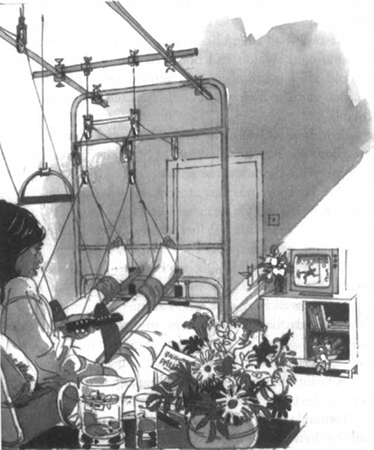

Listen to Part 1:
Chico và bác sĩ đội bóng cùng Palito đến bệnh viện. Trên đường đi, Palito nói sự thật. Hai chân của cậu bé đã đau trong một thời gian dài. Palito không muốn làm Chico hay khán giả thất vọng. Cậu bé đã chơi trong mọi trận đấu quan trọng. Nhưng cậu bé thường cảm thấy đau ở hai chân.
Tại bệnh viện, hai chân của Palito một lần nữa được chụp X-quang. Và một bác sĩ chuyên khoa đã kiểm tra cậu bé. Palito được đưa vào nằm viện và Chico cùng bác sĩ đội bóng ngồi bên cạnh cậu bé. Họ đợi một lúc. Sau đó, bác sĩ chuyên khoa cầm hình chụp X-quang bước vào.
Chico lập tức hỏi bác sĩ chuyên khoa: "Bác sĩ nghĩ sao?"
Bác sĩ chuyên khoa trả lời: "Palito phải phẫu thuật."
Bác sĩ chuyên khoa đưa hình chụp X-quang cho bác sĩ đội bóng. Bác sĩ đội bóng xem xét cẩn thận trong một lúc.
Bác sĩ đội bóng nói với Chico: "Vâng, tôi đồng ý với bác sĩ chuyên khoa. Palito phải phẫu thuật ngay lập tức."
Palito nằm im lặng trên giường bệnh. Cậu bé rất đau đớn và không thể suy nghĩ rõ ràng được.
Chico hỏi: "Bác sĩ ơi, hai chân của Palito bị làm sao vậy?"
Bác sĩ chuyên khoa trả lời: "Đây là bệnh thường xảy ra ở nhiều trẻ em nghèo. Khi còn bé, Palito không có đủ thức ăn. Xương ở chân của cậu bé không cứng lại. Xương bị cong. Palito đã chơi bóng đá quá nhiều. Như vậy là căng thẳng quá mức cho đôi chân của cậu bé. Cậu bé phải phẫu thuật nếu không sẽ không bao giờ chơi bóng đá được nữa."
Listen to Part 2:
Chico hỏi: "Bác sĩ ơi, trong cuộc phẫu thuật sẽ xảy ra chuyện gì ạ?"
Bác sĩ chuyên khoa trả lời: "Chúng tôi sẽ bẻ gãy xương ở chân của Palito. Sau đó, chúng tôi sẽ cẩn thận nắn xương lại. Sau một thời gian, xương sẽ lại mọc lại với nhau. Và lần này, xương sẽ mọc thẳng."
Chico quay sang Palito đang nằm trên giường.
Cậu hỏi: "Palito, con có muốn phẫu thuật không?"
Palito không trả lời vì cậu bé vẫn còn đau.
Cậu bé hỏi Chico: "Khi nào con chơi bóng đá lại được ạ?"
Chico nhìn bác sĩ đội bóng. Bác sĩ đội bóng quay sang bác sĩ chuyên khoa.
Bác sĩ đội bóng nói: "Bác sĩ nghĩ sao?"
Bác sĩ chuyên khoa trả lời: "Tôi không rõ. Có lẽ là sau ba tháng nữa. Nhưng có thể sẽ lâu hơn nhiều."
Chico nói với Palito: "Năm nay con sẽ không thể chơi cho Brazil. Nhưng con còn trẻ. Con sẽ có nhiều cơ hội khác nữa. Tốt hơn là phẫu thuật ngay bây giờ."
Listen to Part 3:
Cuối cùng, cậu bé nói: "Được thôi, Chico. Anh biết thế nào là tốt nhất. Em sẽ phẫu thuật càng sớm càng tốt."
Ba ngày sau, Palito lại nằm trên giường bệnh. Cả hai chân cậu bé đã bị bẻ gãy. Hai chân được băng thạch cao dày và cố định bằng dây trên giường.
